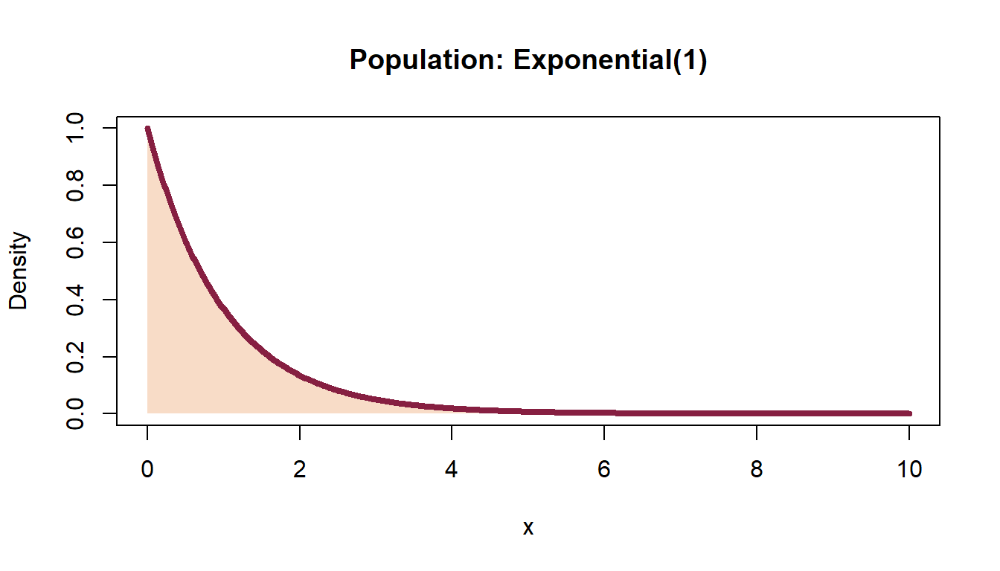
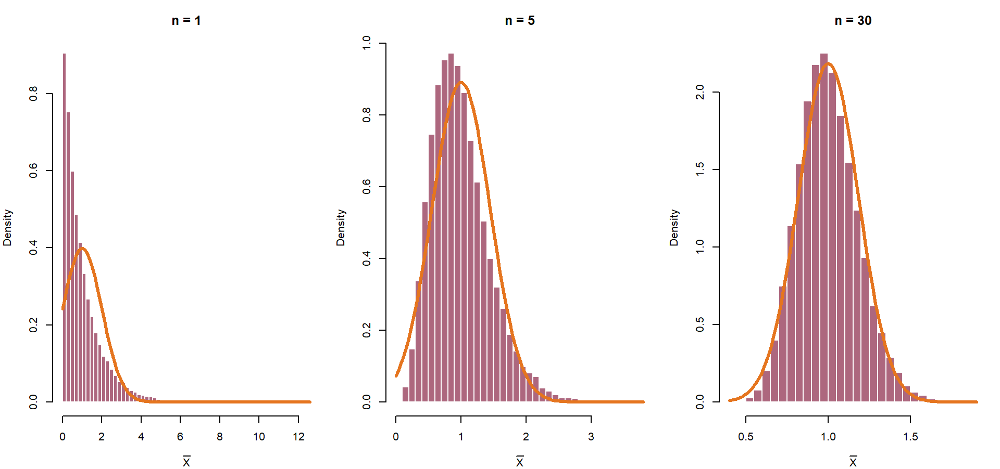
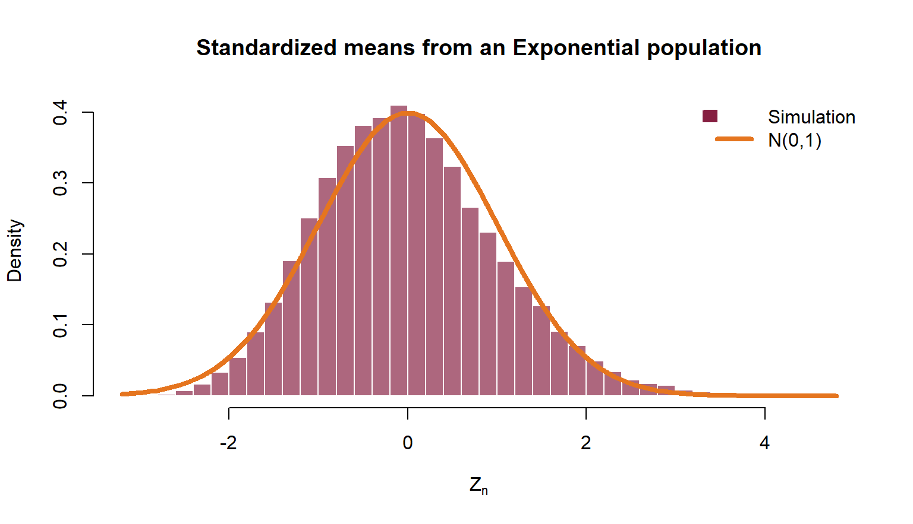

[1] 0.8185946Virginia Tech
Suppose the population is skewed, discrete, or otherwise very non-Normal.
Why does the sample mean often have an approximately Normal distribution?
By the end, you should be able to:
The CLT is a statement about the sampling distribution of a standardized sum or mean.
Start with a strongly right-skewed population:

If we repeatedly average \(n\) independent observations, what shape will those averages have?

The center stays at \(\mu=1\), the spread shrinks, and the shape becomes more Normal.
Let \(X_1,X_2,\ldots\) be IID with
\[ E(X_i)=\mu, \qquad \operatorname{Var}(X_i)=\sigma^2<\infty. \]
Then
\[ Z_n=\frac{\bar X_n-\mu}{\sigma/\sqrt n} \xrightarrow{d} N(0,1) \qquad \text{as }n\to\infty. \]
Equivalently, for sufficiently large \(n\),
\[ \bar X_n \mathrel{\dot\sim} N\!\left(\mu,\frac{\sigma^2}{n}\right). \]
The population itself does not become Normal. The distribution of the standardized mean does.
For \(\bar X_n\):
\[ E(\bar X_n)=\mu, \qquad \operatorname{Var}(\bar X_n)=\frac{\sigma^2}{n}, \qquad \operatorname{SE}(\bar X_n)=\frac{\sigma}{\sqrt n}. \]
Doubling \(n\) does not halve the standard error. To halve it, multiply \(n\) by \(4\).

For a probability involving a sample mean:
pnorm().A machine fills cups with mean \(\mu=12.0\) oz and standard deviation \(\sigma=0.6\) oz. Individual fills are somewhat skewed. For a random sample of \(n=36\) cups, approximate
\[P(11.9<\bar X<12.2).\]
The standard error is
\[ \frac{0.6}{\sqrt{36}}=0.1. \]
Therefore,
\[ P(11.9<\bar X<12.2) \approx P\left(-1<Z<2\right) =\Phi(2)-\Phi(-1). \]
Let \(S_n=X_1+\cdots+X_n\). Since \(S_n=n\bar X_n\),
\[ \frac{S_n-n\mu}{\sigma\sqrt n} \xrightarrow{d}N(0,1), \]
so
\[ S_n\mathrel{\dot\sim}N(n\mu,n\sigma^2). \]
For a mean, the standard deviation is \(\sigma/\sqrt n\).
For a sum, the standard deviation is \(\sigma\sqrt n\).
Daily demand has mean \(42\) units and standard deviation \(9\) units. Assume demands on different days are IID. Over \(50\) days, approximate
\[P(S_{50}>2200). \]
Under the CLT,
\[ S_{50}\mathrel{\dot\sim}N(50\cdot42,50\cdot9^2) =N(2100,4050). \]
Thus
\[ z=\frac{2200-2100}{9\sqrt{50}}\approx 1.571. \]
If \(X_i\sim\operatorname{Bernoulli}(p)\), then
\[ \bar X=\hat p, \qquad E(\hat p)=p, \qquad \operatorname{SE}(\hat p)=\sqrt{\frac{p(1-p)}{n}}. \]
The CLT gives
\[ \frac{\hat p-p}{\sqrt{p(1-p)/n}} \mathrel{\dot\sim}N(0,1). \]
A common rule of thumb is that both \(np\) and \(n(1-p)\) should be at least about \(10\) for a comfortable Normal approximation.
If \(X\sim\operatorname{Bin}(n,p)\), then
\[ \frac{X-np}{\sqrt{np(1-p)}} \xrightarrow{d}N(0,1). \]
Therefore,
\[ X\mathrel{\dot\sim}N\bigl(np,np(1-p)\bigr). \]
Because \(X\) is discrete and the Normal distribution is continuous, a continuity correction usually improves the approximation.
Let \(Y\sim N(np,np(1-p))\). Translate integer outcomes into intervals of width \(1\):
| Binomial probability | Normal approximation |
|---|---|
| \(P(X\le k)\) | \(P(Y\le k+0.5)\) |
| \(P(X<k)\) | \(P(Y<k-0.5)\) |
| \(P(X\ge k)\) | \(P(Y\ge k-0.5)\) |
| \(P(X>k)\) | \(P(Y>k+0.5)\) |
| \(P(X=k)\) | \(P(k-0.5<Y<k+0.5)\) |
Memory aid: move the Normal boundary outward so that it covers exactly the integer outcomes you want.
Let \(X\sim\operatorname{Bin}(25,0.4)\). Approximate \(P(X\le8)\).
\[ \mu=np=10, \qquad \sigma=\sqrt{np(1-p)}=\sqrt6. \]
With continuity correction,
\[ P(X\le8) \approx \Phi\!\left(\frac{8.5-10}{\sqrt6}\right). \]
There is no universal cutoff.
“\(n\ge30\)” is a rough classroom mnemonic—not a theorem.
The classical version assumes:
Be cautious with:
A population has mean \(80\) and standard deviation \(24\). For samples of size \(64\):
Answers:
\[ \bar X\mathrel{\dot\sim}N(80,3^2), \]
\[ P(77<\bar X<85)\approx\Phi(5/3)-\Phi(-1), \]
and the standard error falls from \(3\) to \(1.5\).